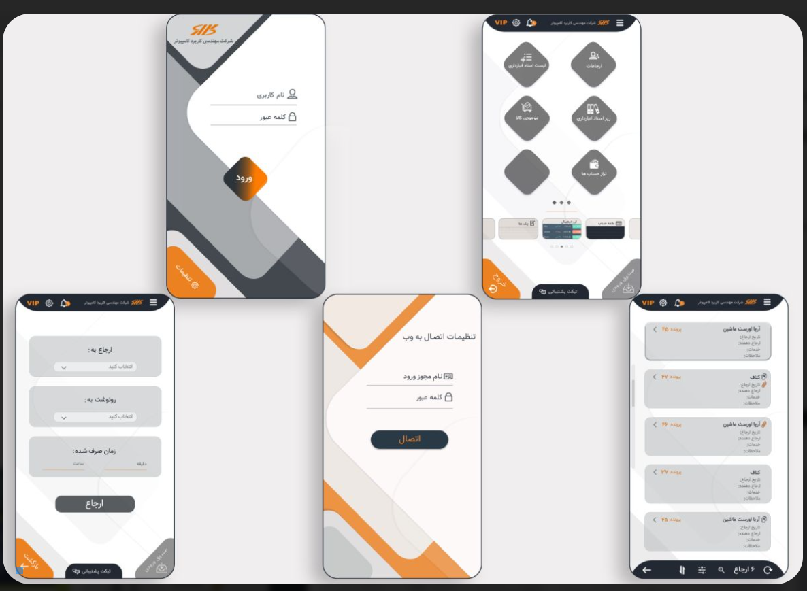

Project Title: Karbord Computer - UI Design
As a Mobile App Designer at Karbord Computer Software Company, I played a key role in designing intuitive and visually engaging interfaces for our cutting-edge software. Using a combination of Adobe Photoshop and Adobe XD, I focused on crafting a seamless user experience that enhanced user interactions while aligning with the software’s functionality and brand identity.

User Research & Requirements
The foundation of this project was built on a deep understanding of our target users. To ensure the design met their needs, I conducted:
- Stakeholder Interviews: Collaborated closely with development and business teams to define key features and objectives for the app.
- Target Audience Analysis: Conducted research into user behaviors, pain points, and preferences, which helped inform design decisions.
- Competitive Benchmarking: Reviewed competitor apps to identify opportunities for innovation and optimize user experience.
The outcome of this research was a clear direction to design an app that combined intuitive navigation, user-friendly features, and a modern, professional aesthetic.
Design Concept & Approach
Using the insights gathered from research, I crafted a design that prioritized usability and visual appeal. The design process included:
- Interface Design: Focused on clean, easy-to-navigate layouts, ensuring key features were easily accessible to users.
- Color Palette & Typography: Selected a modern, professional color scheme that reflected the software’s branding, paired with legible typography for a polished look.
- Visual Design Elements: Included thoughtfully placed icons, buttons, and interactive elements to guide users effortlessly through the app.
Design Refinement & Testing
Although the designs could not be fully prototyped due to the NDA, I continuously refined them through internal reviews and testing:
- Internal Feedback: Regularly collaborated with the development team to align designs with technical capabilities and ensure feasibility.
- Usability Testing: Engaged with users for feedback on design elements like navigation, interactions, and accessibility to fine-tune the app’s interface.
- Accessibility Focus: Ensured that the design adhered to accessibility standards, such as high contrast for readability and scalable text for different devices.
Key Achievements
Through the design process, the final product achieved:
- Enhanced User Satisfaction: Feedback highlighted the ease of use and intuitive navigation.
- Increased Engagement: The interface design led to more active use of the app’s core features.
- Higher Retention Rates: Users found the app’s streamlined design kept them coming back for regular use.